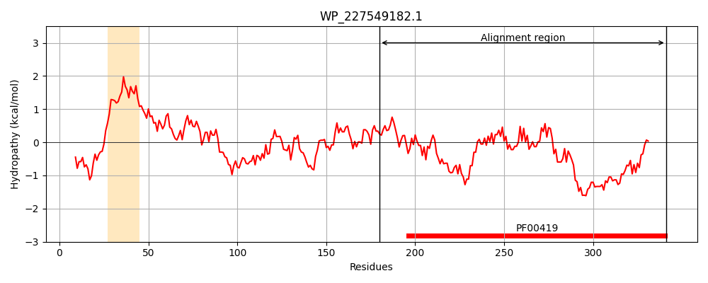
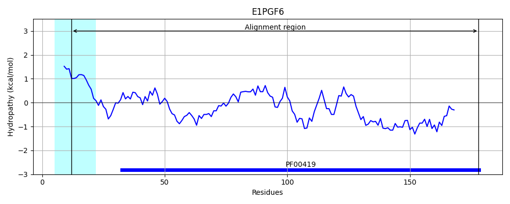
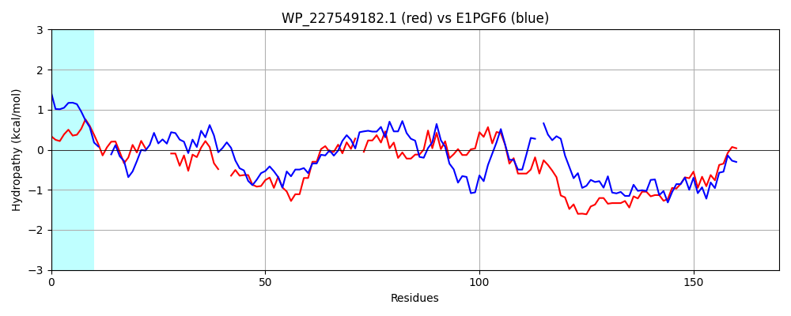

Hit Accession: E1PGF6
Hit TCID: 1.C.80.1.2
Hit Description: gnl|BL_ORD_ID|3594 gnl|TC-DB|E1PGF6|1.C.80.1.2 Minor F1C fimbrial subunit SfaD OS=Escherichia coli OR:K5:H- (strain ABU 83972) GN=sfaD PE=4 SV=1
Mach Len: 170
e:0.000002
Query TMS Count : 1
Hit TMS Count: 1
TMS-Overlap Score: 0.000000
Predicted Substrates:CHEBI:24870;ion, CHEBI:25367;molecule
BLAST Alignment:
Score: 111 , Bit scores: 47 bits, E-value: 1.6e-06, Alignment length: 170, Percentage identity: 26
Query: 180 LLARASVANQFYFANVTLNGTNT-----ITSESCSVTTNP--VNVPLGDHDKSEFSGPGTGTAWQTFNINLS-CVQGARINVRIDATADSDAGVPGVIKLDSDPVNASGVGVQLWYRYEDSPVQFGQERYYYTSPSGGNEYVQLQARYYQTTQSITAGKANATATFTLTY 341
LL+ A++A + +V L G N I +E+CS+ + + V +G + F G F+I+L C V I SD P ++ +D + + G+ + L + V+ Q + + G+ + +QARY T +T GKAN F+LTY
Sbjct: 12 LLSPAALAGNHW--HVMLPGGNMRFQGKIIAEACSLALSDRQMTVDMGQLSSNRFHAAGEYGDSVGFDIHLQGCSTVVSQRVGISFYGVSDIHEPELLSVDEENDASDGIAIAL-FNESGELVKLNQPPENWVHLTRGDMKLHMQARYKATHYPVTGGKANGQVWFSLTY 178 | Protein Hydropathy Plots: |
|---|
|  |  |
Pairwise Alignment-Hydropathy Plot:
|
|---|
|  |